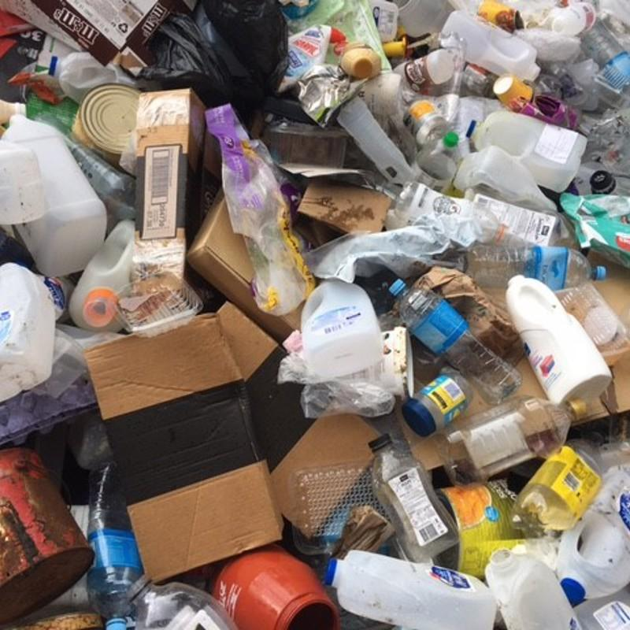
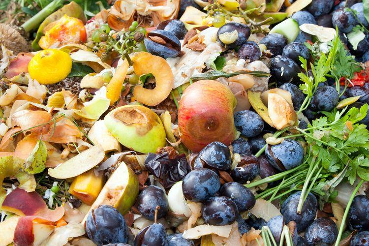
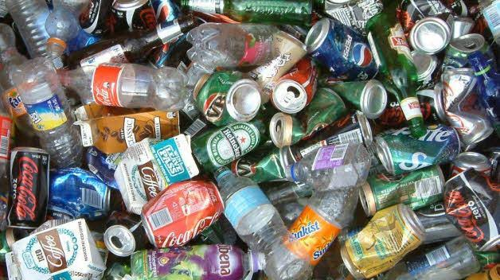
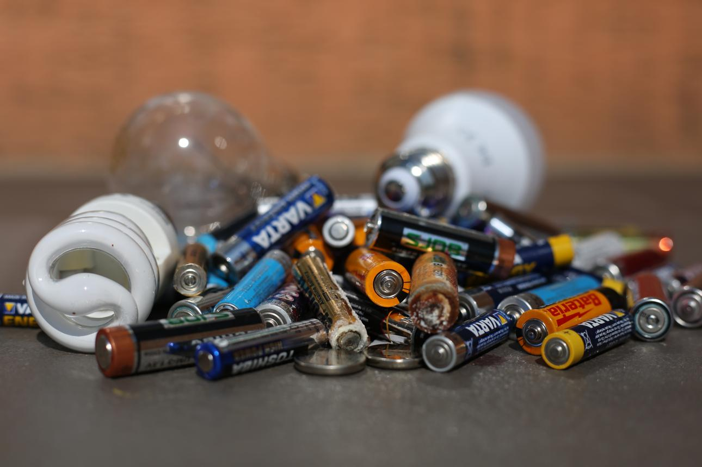
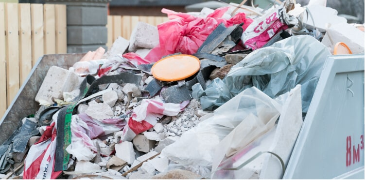
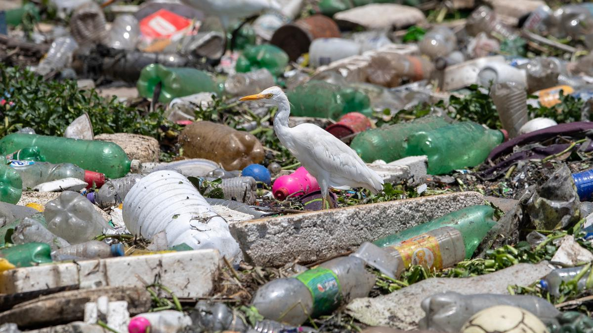
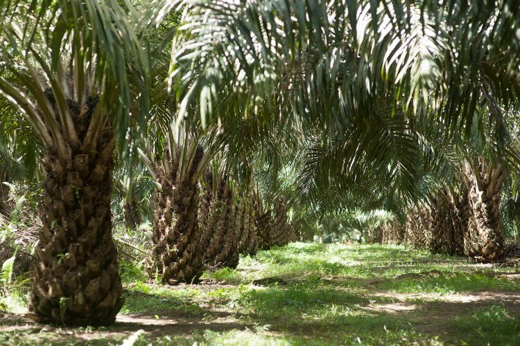
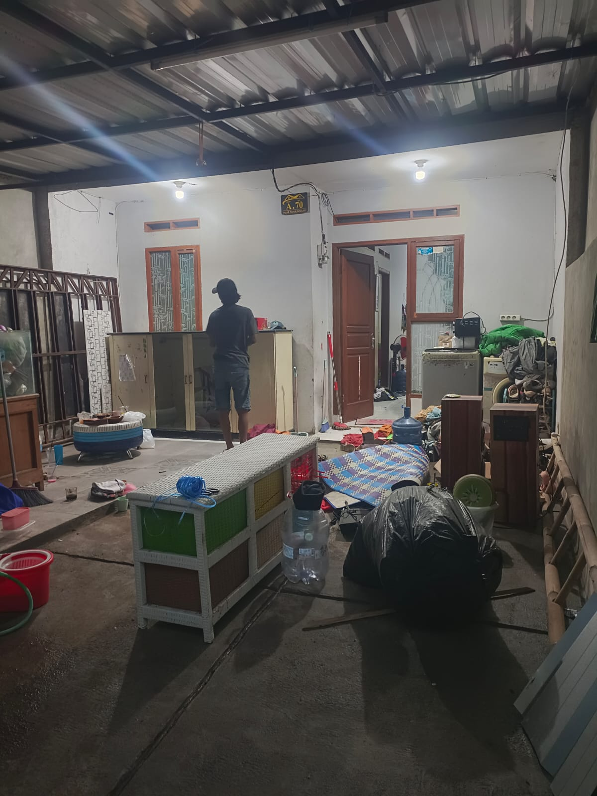
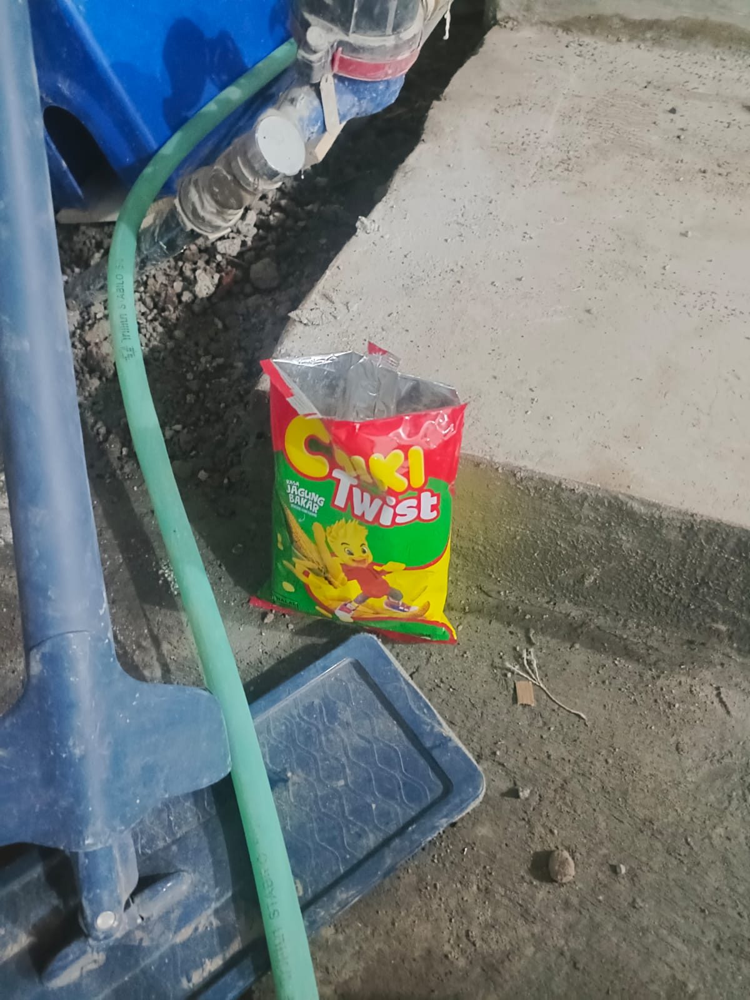
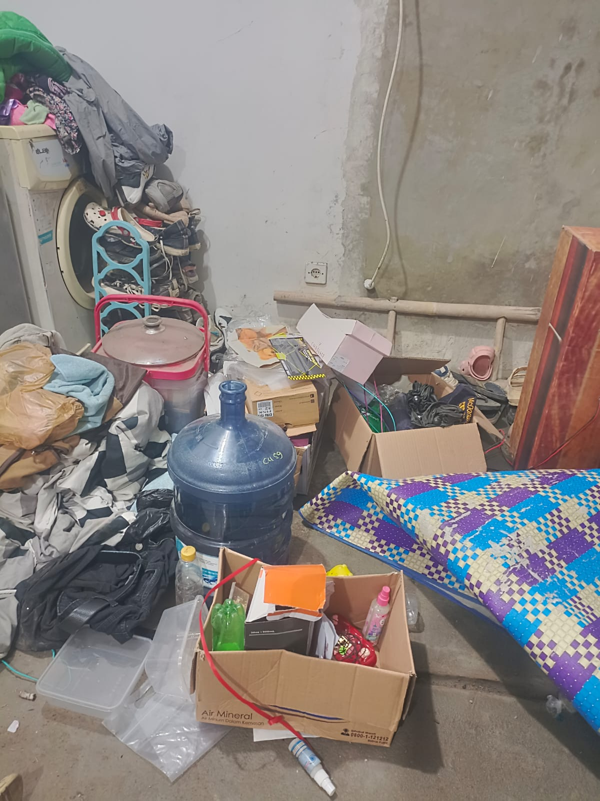

Jenis Limbah Berdasarkan Wujudnya:
Limbah padat:
Buangan berwujud padat yang berasal dari kegiatan industri maupun domestik. Dalam kehidupan sehari-hari sering disebut sampah.


Limbah cair:
Segala jenis buangan yang berwujud cair, larut dalam air, atau tersuspensi dan dapat mengalir menuju badan perairan (sungai/laut).
Limbah gas:
Buangan yang berwujud gas dan memanfaatkan udara sebagai media penyebarannya sehingga memengaruhi kualitas atmosfer..

Jenis Limbah Berdasarkan Senyawa/Sifatnya:
-Photoroom.png)

Limbah organik:
Limbah organik adalah sisa buangan yang berasal dari bahan alami atau makhluk hidup serta mudah terurai secara biologis oleh mikroorganisme
Limbah anorganik:
Sampah anorganik adalah limbah yang berasal dari bahan non-hayati atau sintetis yang sangat sulit atau tidak dapat terurai secara alami oleh mikroorganisme


Limbah B3:
Limbah B3 (Bahan Berbahaya dan Beracun) adalah sisa dari suatu usaha atau kegiatan yang mengandung bahan berbahaya dan/atau beracun karena sifat, konsentrasi, atau jumlahnya dapat mencemarkan, merusak lingkungan hidup, serta membahayakan kesehatan manusia
Limbah Residu
Limbah residu adalah jenis limbah atau sampah yang sudah tidak dapat didaur ulang atau dimanfaatkan kembali dengan mudah sehingga biasanya harus dibuang ke tempat pembuangan akhir (TPA)

Jenis Limbah Berdasarkan Sumbernya:
Limbah Domestik (Rumah Tangga):
Limbah yang berasal dari aktivitas sehari-hari di lingkungan permukiman, perkantoran, pasar, restoran, dan tempat umum.

Limbah Industri:
Limbah yang dihasilkan dari sisa proses produksi pabrik atau kegiatan manufaktur. Karakteristik limbah ini sangat bergantung pada jenis industrinya (tekstil, makanan, kimia, logam, dll.).
Limbah Pertanian dan Perkebunan:
Limbah yang berasal dari kegiatan bercocok tanam, pemeliharaan tanaman, hingga masa panen.

Limbah Peternakan dan Perikanan:
Limbah yang dihasilkan dari kegiatan pemeliharaan hewan ternak maupun budidaya perikanan.
Limbah Medis:
Limbah yang berasal dari fasilitas pelayanan kesehatan seperti rumah sakit, puskesmas, klinik, apotek, dan laboratorium medis. Limbah ini umumnya termasuk kategori B3 (Bahan Berbahaya dan Beracun) karena bersifat infeksius.
Limbah Pertambangan:
Limbah yang dihasilkan dari proses penggalian, ekstraksi, dan pemurnian sumber daya alam dari dalam bumi.

Dampak Limbah
Limbah yang tidak dikelola dengan baik dapat menyebabkan pencemaran air, tanah, dan udara. Sampah yang menumpuk juga dapat menyumbat selokan, menyebabkan banjir, dan merusak habitat makhluk hidup.
Cara Mengurangi Limbah
Reduce:
mengurangi segala sesuatu yang berpotensi menimbulkan sampah atau membatasi penggunaan barang sekali pakai sejak dari awal.Reuse:
kegiatan menggunakan kembali barang atau sampah yang masih layak pakai untuk fungsi yang sama ataupun fungsi yang berbeda tanpa melalui proses pengolahan kembali menjadi bahan bakuRecycle:
Mengolah bahan limbah melalui proses tertentu (seperti penghancuran atau peleburan) menjadi bahan baku atau produk baru.CONTOH TINDAKAN NYATA YANG DAPAT DI LAKUKAN
Contoh: Membawa botol minum sendiri saat bepergian untuk menghindari pembelian air kemasan plastik.
Contoh: Memanfaatkan botol plastik bekas minuman menjadi pot tanaman, kaleng biskuit menjadi tempat alat tulis, atau kardus bekas sebagai kotak penyimpanan.
Contoh: Sisa makanan dan daun kering yang Diolah melalui pembusukan alami (komposting) menjadi pupuk kompos kaya nutrisi untuk tanaman.
- Memilah sampah organik dan anorganik.
- Membawa botol minum dan tas belanja sendiri.
- Tidak membuang sampah sembarangan.

Observasi
Kondisi Barang dan Kebersihan: Berdasarkan hasil observasi, kondisi di lingkungan ini ada banyak barang yang berserakan dan menumpuk di lantai, seperti pakaian, kardus bekas dan botol air mineral. Selain itu, di sudut lantai terlihat sampah kemasan makanan ringan yang tergeletak di dekat selang air dan pipa, sehingga menunjukkan bahwa kebersihan rumah kurang terjaga.


Jenis Sampah
Di lingkungan ini terdapat limbah yang jenis golongannya Limbah Padat seperti bekas kemasan ciki twist, kertas, plastik dan pakaian. Dan juga ada limbah jenis anorganik yaitu ada kardus dan galon